Kategori Cuti Kerja
Karyawan SLP
Cuti Umum
Diajukan oleh semua karyawan
Cuti umum merupakan cuti yang dapat diajukan oleh semua karyawan. Durasi cuti maksimal dalam suatu periode adalah kuota cuti tahunan karyawan. Cuti harus diajukan minimal 2 hari sebelum tanggal mulai cuti. Contoh penggunaan cuti umum : mengurus keperluan perjalanan luar negri di kedutaan.
Cuti Melahirkan
Diajukan oleh karyawan hamil

Cuti umum merupakan cuti yang dapat diajukan oleh semua karyawan. Durasi cuti maksimal dalam suatu periode adalah kuota cuti tahunan karyawan. Cuti harus diajukan minimal 2 hari sebelum tanggal mulai cuti. Contoh penggunaan cuti umum : mengurus keperluan perjalanan luar negri di kedutaan.
Cuti Kesehatan
Diajukan oleh semua karyawan

Cuti umum merupakan cuti yang dapat diajukan oleh semua karyawan. Durasi cuti maksimal dalam suatu periode adalah kuota cuti tahunan karyawan. Cuti harus diajukan minimal 2 hari sebelum tanggal mulai cuti. Contoh penggunaan cuti umum : mengurus keperluan perjalanan luar negri di kedutaan.
Cuti Kedukaan
Diajukan oleh semua karyawan
Cuti umum merupakan cuti yang dapat diajukan oleh semua karyawan. Durasi cuti maksimal dalam suatu periode adalah kuota cuti tahunan karyawan. Cuti harus diajukan minimal 2 hari sebelum tanggal mulai cuti. Contoh penggunaan cuti umum : mengurus keperluan perjalanan luar negri di kedutaan.